History
Himatnagar was founded in 1426 by Ahmed Shah I of Gujarat Sultanate and named it Ahmednagar after himself. He founded
the town to keep Raos of Idar State in check.
When the Rao dynasty took Idar in 1728, Ahmednagar soon fell into their hands. After the death of Maharaja Shivsing, in 1792, his brother Sangramsing took Ahmednagar and the country around; and, in spite of the efforts of his nephew Gambhirsing, became an independent chief. Sangramsing was succeeded by his son Karansing. The later died in 1835, and Erskine, the British Agent, who was in the neighbourhood with a force, moved to Ahmednagar to prevent the queens from becoming satis. The sons of the deceased Maharaja begged Erskine not to interfere with their customs. Finding him resolved to prevent the sati practice, while pretending to negotiate, they secretly summoned the Bhils and other turbulent tribes, and in the night, opening a way through the fort wall to the river bed, the queens burnt themselves with their deceased husband. The sons of the deceased Maharaja fled, but subsequently gave themselves up, and, after entering into an engagement with the British Government, Takhtsing was allowed to succeed his father as Maharaja of Ahmednagar. Some years later he was chosen to fill the vacant throne of Jodhpur State. He tried to keep Ahmednagar and its dependencies, but, after a long discussion, it was, in 1848, ruled that Ahmednagar should revert to Idar State.
In 1912, the town was renamed Ahmednagar to Himatnagar after prince Himmat Singh by Sir Pratap Singh, the Maharaja of Idar. The state was under Mahi Kantha Agency during British rule which subsequently became part of Western India States Agency.[3]
Among various old businesses with relevance to history of Himatnagar, Himat Vijay Printing Press (established in 1931) was named after King Himat Singh and was owned and operated by Late Shri Chhotalal Narsinhdas Shah (and his family still runs it) and he was longest servicing President of Himantagar Panchyant before it became municipality. The main road through City across to Municipal office has been named as C N Shah Road and parallel road has been named after famous Dr Nalinkant Gandhi, as Dr Nalinkant Gandhi Road. Municipal Town Hall has also been named as "Dr Nalinkant Gandhi Town Hall".
After independence of India in 1947, Idar State was merged with Union of India. From 1947 to 1956, it was a part of Bombay State as Idar district. Himatnagar was the largest city and the administrative headquarters of the Dungarpur district, Rajasthan from 1956 to 1960. Since 1961, Himatnagar is the administrative headquarter and part of Sabarkantha district of Gujarat.
When the Rao dynasty took Idar in 1728, Ahmednagar soon fell into their hands. After the death of Maharaja Shivsing, in 1792, his brother Sangramsing took Ahmednagar and the country around; and, in spite of the efforts of his nephew Gambhirsing, became an independent chief. Sangramsing was succeeded by his son Karansing. The later died in 1835, and Erskine, the British Agent, who was in the neighbourhood with a force, moved to Ahmednagar to prevent the queens from becoming satis. The sons of the deceased Maharaja begged Erskine not to interfere with their customs. Finding him resolved to prevent the sati practice, while pretending to negotiate, they secretly summoned the Bhils and other turbulent tribes, and in the night, opening a way through the fort wall to the river bed, the queens burnt themselves with their deceased husband. The sons of the deceased Maharaja fled, but subsequently gave themselves up, and, after entering into an engagement with the British Government, Takhtsing was allowed to succeed his father as Maharaja of Ahmednagar. Some years later he was chosen to fill the vacant throne of Jodhpur State. He tried to keep Ahmednagar and its dependencies, but, after a long discussion, it was, in 1848, ruled that Ahmednagar should revert to Idar State.
In 1912, the town was renamed Ahmednagar to Himatnagar after prince Himmat Singh by Sir Pratap Singh, the Maharaja of Idar. The state was under Mahi Kantha Agency during British rule which subsequently became part of Western India States Agency.[3]
Among various old businesses with relevance to history of Himatnagar, Himat Vijay Printing Press (established in 1931) was named after King Himat Singh and was owned and operated by Late Shri Chhotalal Narsinhdas Shah (and his family still runs it) and he was longest servicing President of Himantagar Panchyant before it became municipality. The main road through City across to Municipal office has been named as C N Shah Road and parallel road has been named after famous Dr Nalinkant Gandhi, as Dr Nalinkant Gandhi Road. Municipal Town Hall has also been named as "Dr Nalinkant Gandhi Town Hall".
After independence of India in 1947, Idar State was merged with Union of India. From 1947 to 1956, it was a part of Bombay State as Idar district. Himatnagar was the largest city and the administrative headquarters of the Dungarpur district, Rajasthan from 1956 to 1960. Since 1961, Himatnagar is the administrative headquarter and part of Sabarkantha district of Gujarat.
Photos
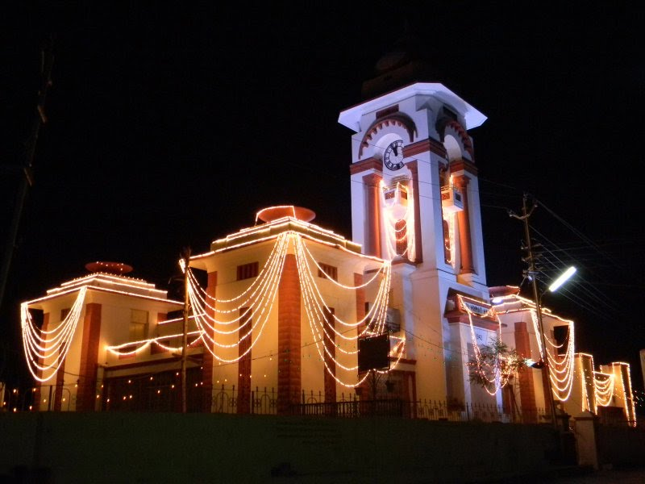
 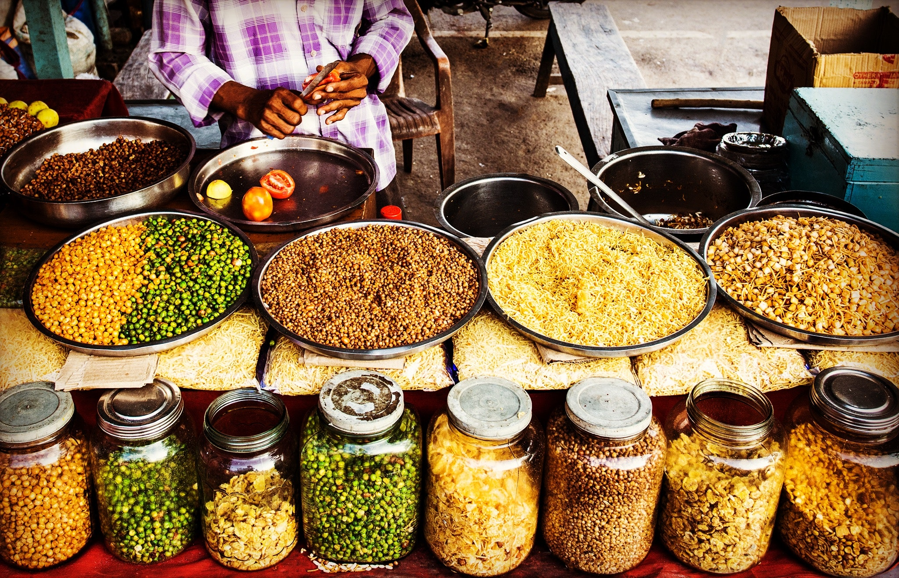
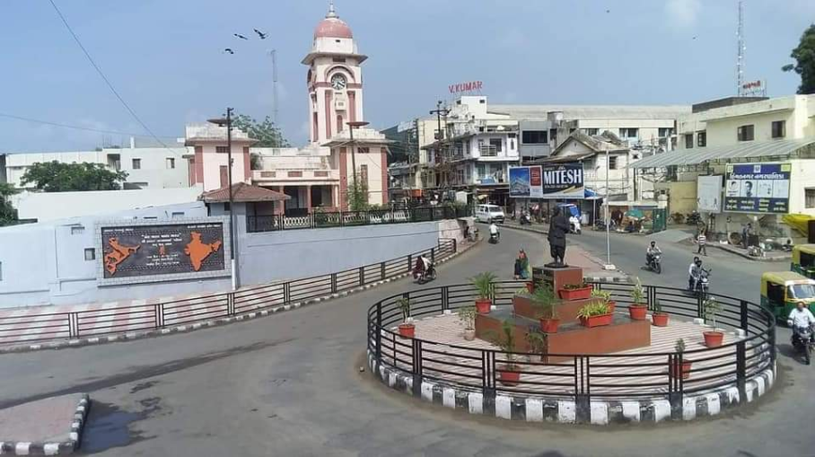
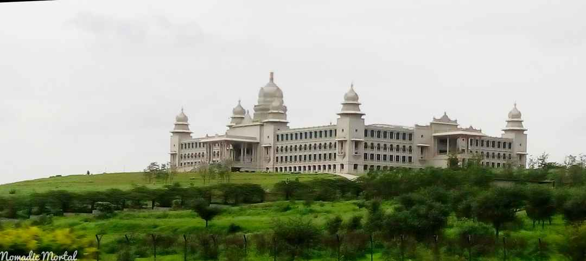
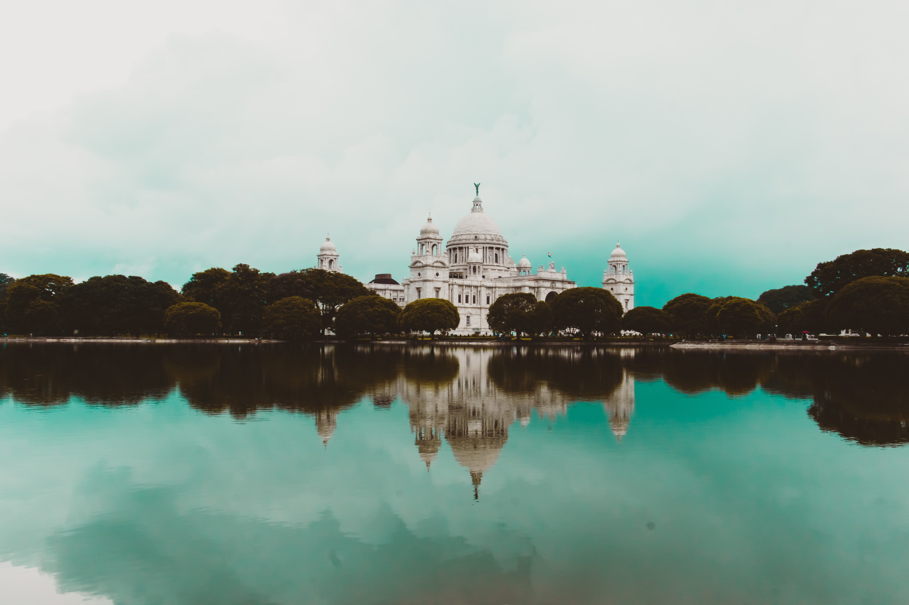
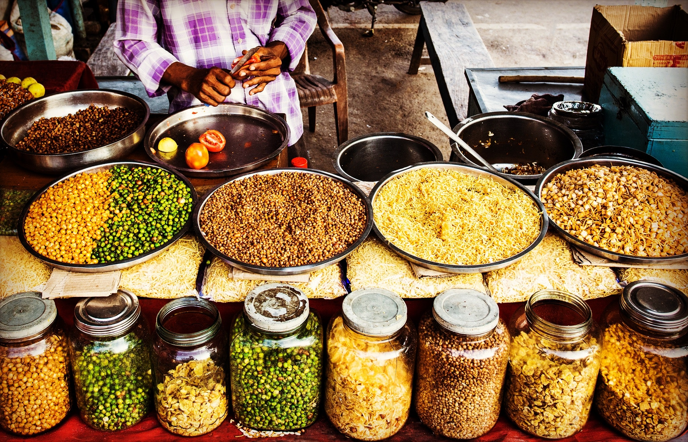
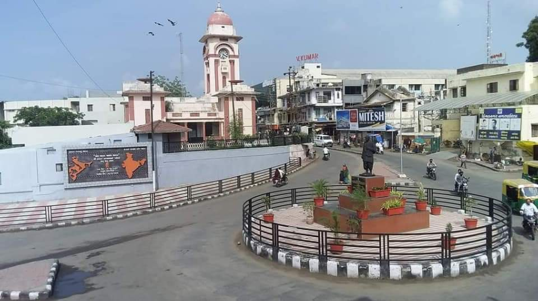
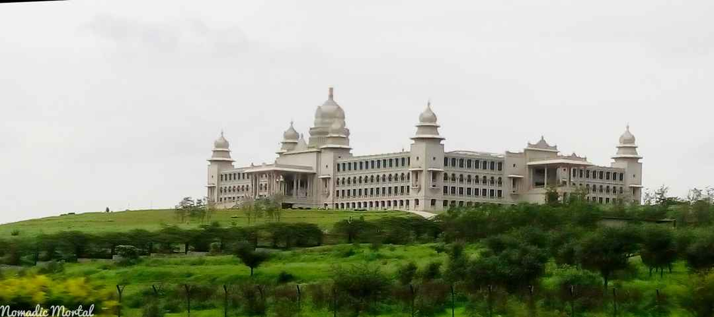
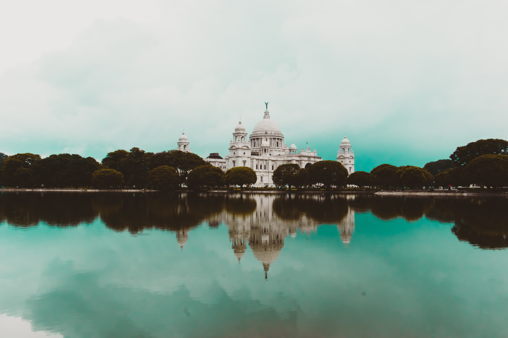
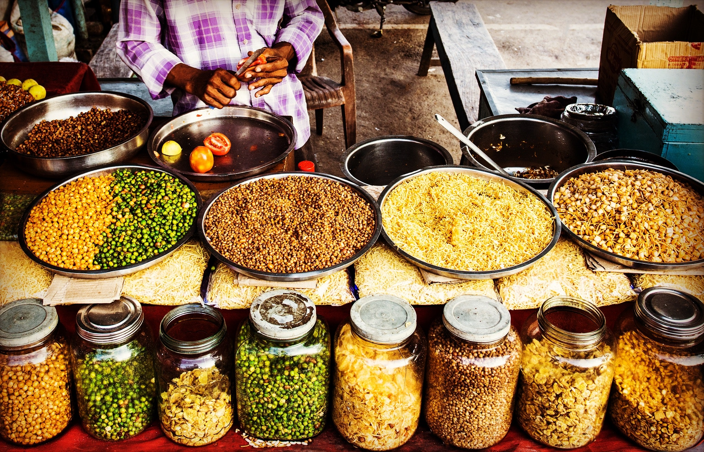
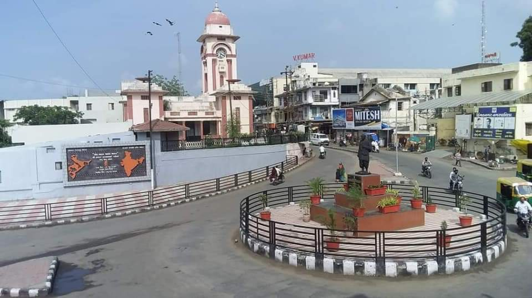
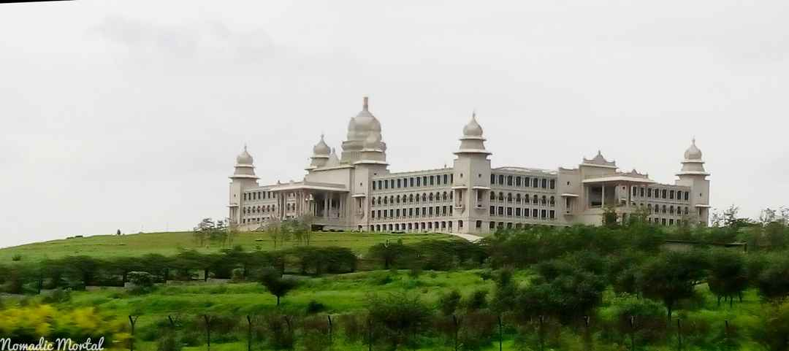
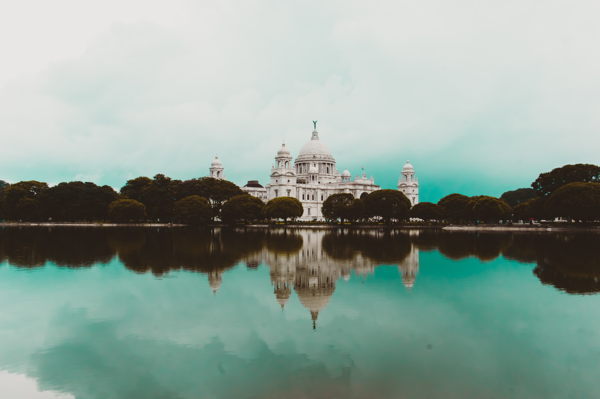